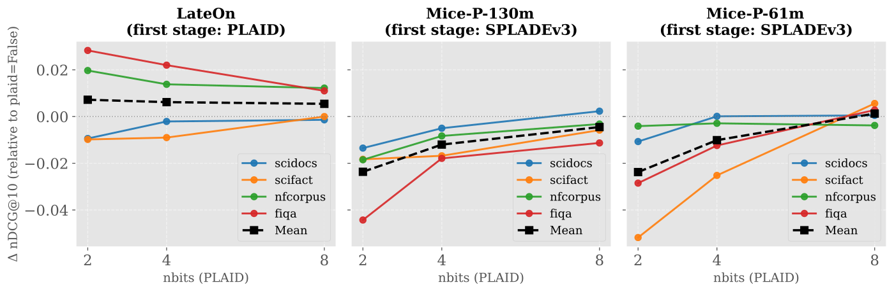
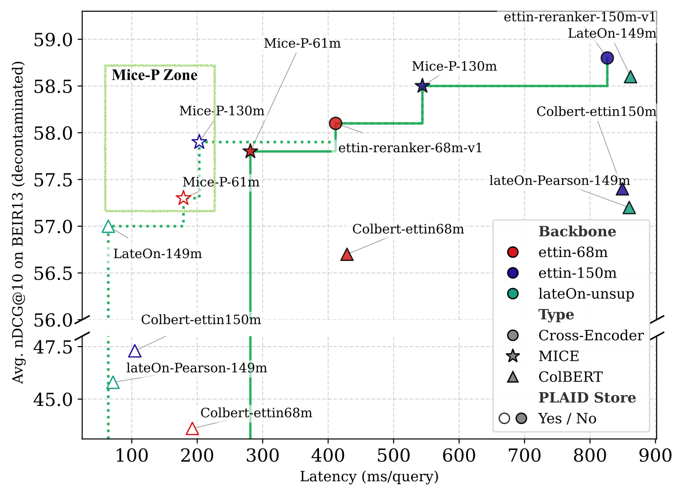

Retrieval systems commonly score candidate documents with one of two kinds of model. A cross-encoder reads the query and document together, which is the most accurate but means every candidate must be fully processed for every query. "Late-interaction" models such as ColBERT encode documents token by token ahead of time and store them, so at query time they only run a simple similarity comparison, which is fast but less accurate. MICE (a "cross-encoder with precomputable documents") is a reranking architecture between the two that can precompute document representations, but the original paper left open how to store them. This paper supplies a storage scheme, MICE-P: compress each document token vector to 128 dimensions, store it in the compressed format of PLAID (a multi-vector compressed index commonly used with ColBERT), and decompress it at query time for scoring. On 13 public retrieval datasets, the 130-million-parameter MICE-P scores only 0.9 points below a cross-encoder of similar size on average ranking quality at about a quarter of the per-query time, and 0.9 points above the PLAID version of LateOn at about 3 times its latency.
My take: this is a short engineering paper. Its value is in turning MICE, which could "in theory" precompute documents, into a retrieval pipeline that actually runs, and in comparing it fairly with cross-encoders and ColBERT on the same training data and backbone. It gives teams looking for a middle point between cross-encoders and ColBERT a new option. The costs are also clear. The index is about twice the size of LateOn's, a separate SPLADE retrieval index must be maintained, and on another benchmark, LoTTE, it does not beat LateOn.
What problem is it actually solving?
Start with how the two mainstream scoring approaches differ. A cross-encoder feeds the query and document into the model as one text, so query and document tokens can see each other in every layer, which makes it the most accurate. But the document representation depends on the query and cannot be computed in advance, so every query requires a full model pass for every candidate.
ColBERT does the opposite and encodes documents and queries separately. Each document token vector can be computed offline and stored in an index. At query time only the query is encoded, and for each query token the model finds the most similar document token and sums these similarities, a step called MaxSim. It is fast, but query and document meet only in a single simple comparison at the end, so it is usually less effective than a cross-encoder.
MICE tries to get the best of both. It splits the model into two parts. The first layers are "contextualization layers" where the query and document are encoded separately, so the document side can be precomputed. The last layers are "interaction layers" where query tokens use attention over the frozen document token representations, capturing richer matching signals than MaxSim. The original paper validated it only for reranking and analyzed efficiency only in theory, without a way to store and search these token representations over a whole collection.
Method: giving MICE a PLAID store
PLAID is the index commonly used with ColBERT. It first clusters all token vectors with k-means, stores each vector as "the nearest centroid ID plus the residual from that centroid", and quantizes the residual to a few bits, which greatly compresses storage.
MICE-P makes three changes. First, a "bottleneck layer" after the contextualization layers linearly projects each document token vector from the model dimension down to 128 dimensions and then normalizes it, because the PLAID implementation requires normalized vectors. Second, the compressed vectors are stored in PLAID's residual format. At query time, candidate document vectors are decompressed from the store, projected back to the original dimension by a linear layer, and passed to the interaction layers for scoring. Third, MICE-P does not use PLAID's built-in retrieval, because that is tied to MaxSim scoring. Candidates are still retrieved by a separate SPLADE model, which returns the top 100.
The number of quantization bits is a key parameter. The authors measured, on five datasets, how much ranking quality drops at different bit widths relative to no compression.

LateOn loses almost nothing at 2 bits. MICE-P drops by more than 0.03 on average at 2 bits (on a scale where 1 is perfect) and by about 0.05 on FiQA and ArguAna, so the authors chose 4 bits. This means MICE-P needs twice the residual storage per vector. My guess is that MICE-P's interaction layers attend closely to every document token vector and are more sensitive to precision, whereas ColBERT only takes the single most similar token, so a coarser approximation matters less.
Training: converting an existing cross-encoder
The original MICE was distilled directly from a pretrained encoder. This paper takes a different route and converts an already trained Ettin cross-encoder in two steps. In step one, the cross-encoder weights are put into the MICE architecture and training continues on the ranking task, so the model adapts to the new structure in which query and document cannot see each other in the early layers. In step two, the bottleneck is added and only the bottleneck and interaction layers are trained, with the contextualization layers frozen, because the authors found that gradients flowing through the fresh bottleneck damaged those layers.
The training data is 143 million query-passage pairs, each scored by a larger cross-encoder, and the student model fits these scores with a mean squared error loss. For fairness, the authors trained their own ColBERT models on the same data with the same Ettin backbone. Their reproduced Ettin cross-encoder averages 58.0 on the 13 datasets, essentially matching the released checkpoint's 58.1, which shows the training pipeline is sound.
Results: a new spot between speed and quality
The main evaluation uses BEIR13, the 13 datasets from the BEIR benchmark with training-data overlap removed. So that all designs are measured on the same scale, the metric is nDCG@10, the ranking quality of the top 10 results, multiplied by 100 in the table below. Latency is measured on DBPedia-Entity, with 1 million documents and 349 queries, averaged over five runs. The latencies in the table are approximate values read from Figure 2 of the paper. The other benchmark, LoTTE, is built from forum questions and answers and is commonly used to evaluate ColBERT-style models; it serves here as an out-of-domain check.
| Design | Parameters | BEIR13 average | LoTTE average | Latency per query |
|---|---|---|---|---|
| Ettin cross-encoder (reranking SPLADE results) | 150M | 58.8 | 59.1 | about 830 ms |
| MICE-P without PLAID storage | 130M | 58.5 | 58.5 | about 545 ms |
| MICE-P with PLAID storage | 130M | 57.9 | 57.4 | about 200 ms |
| LateOn (ColBERT-style, PLAID retrieval) | 149M | 57.0 | 58.2 | about 60 ms |
| LateOn (reranking SPLADE results) | 149M | 58.6 | 61.3 | about 860 ms |
The table shows that with PLAID storage, MICE-P loses only 0.6 points on BEIR13 relative to the uncompressed version, while latency falls from about 545 ms to about 200 ms. Compared with the cross-encoder, it gives up 0.9 points and is about 4 times faster. Compared with the PLAID version of LateOn, it is 0.9 points better but about 3 times slower. On the paper's quality-versus-latency plot, it fills the empty region between LateOn and the cross-encoder. The authors also report that, without compression, MICE needs about 60% of the compute of the corresponding cross-encoder.

There is also a side finding. The authors' own ColBERT models do well when reranking SPLADE results, but they drop sharply when PLAID does the retrieval itself; the 150M version falls from 57.4 to 47.3. The official LateOn drops far less. The authors suspect that their ColBERT models used a loss that only fits scores, without contrastive learning and hard negatives, so the token vectors are not spread out enough and PLAID's cluster-based retrieval breaks down.
Limitations as I see them
First, storage doubles. On Climate-FEVER with 5 million documents, MICE-P's total index is 100.1 GB, of which the PLAID store is 90.2 GB and the SPLADE index 9.9 GB, while LateOn needs 51.8 GB. The main reason is that MICE-P needs 4-bit rather than 2-bit quantization.
Second, the advantage is not consistent. On LoTTE, MICE-P with PLAID storage scores 57.4, below PLAID-based LateOn at 58.2 and reranking LateOn at 61.3. So the claim of being more accurate than ColBERT currently holds only on BEIR13.
Third, it is not yet truly end-to-end retrieval. Candidate retrieval still relies on a separate SPLADE model, so the system has two indexes to maintain. The authors list retrieving directly with PLAID as future work.
How a team could try this
- If you rerank with a cross-encoder in production and latency is tight, evaluate MICE-P as a replacement: take the top 100 from SPLADE or another retriever and compare latency and ranking quality.
- Test quantization bit widths on your own data first; the paper shows MICE-P is sensitive at 2 bits and steadier at 4 bits.
- Evaluate on two kinds of datasets so you do not win on only one benchmark.
- The authors released code, configurations and all models, so you can convert an Ettin cross-encoder with the two-step training recipe directly.
One-sentence conclusion
MICE-P makes a "cross-encoder with precomputable documents" actually run, reaching near cross-encoder quality on BEIR13 at about a quarter of the time, at the cost of an index roughly twice as large plus an extra retrieval index.
| Dimension | Assessment |
|---|---|
| Importance | Medium. The quality-speed trade-off is a long-standing problem in retrieval systems |
| Novelty | Medium-low. Mainly combines the existing MICE and PLAID, plus training techniques |
| Evidence | Medium. Fair comparison on the same backbone and data, but latency is measured on one dataset and it does not lead on LoTTE |
| Engineering cost | Medium. Requires maintaining both SPLADE and PLAID indexes, with about twice ColBERT's storage |
| Worth trying | Yes, for teams whose cross-encoder latency is too high |
Discussion
Add experiment details, reproduction notes or a different take. Requires a GitHub sign-in.
Loading the discussion…